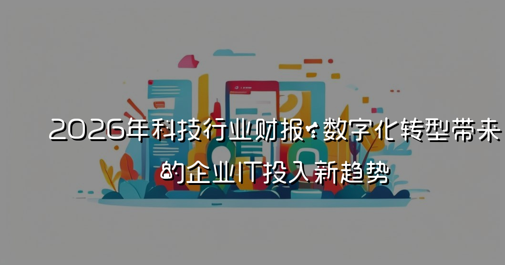

2026年科技行业的财报揭示了因数字化转型而引发的IT投入新趋势。企业在新技术上不断加大资金投入，特别是在云计算、大数据分析和人工智能等领域。此趋势不仅推动了企业的效率提升，也引发了对IT人力资源、技术架构和数据安全的深刻思考及挑战，预示着科技公司将在未来几年迎来更加激烈的竞争。
2026年科技行业财报：数字化转型带来的企业IT投入新趋势
在短短的几年间，随着数字化转型的不断深入，企业的IT投入出现了显著的新趋势。2026年科技行业的财报充分展示了这种转型带来的积极变化及其面临的挑战。在这个过程中，企业不仅关注资金的直接投入，还开始重新思考技术架构、人才培养和数据安全等多个维度。
数字化转型的背景
近年来，全球数字化转型的浪潮席卷各行各业。从生产到管理，再到服务，几乎每一个环节都在接受新技术的洗礼。据国际数据公司（IDC）的统计，2026年全球数字化转型支出预计将达到3万亿美元，这个数字不仅反映了技术投资的增长，更说明了企业对于效率和创新的迫切追求。
在这一过程中，推动企业IT投入增长的主要因素包括：
- 客户需求的变化：客户希望获得个性化和高效的服务。
- 市场竞争的加剧：企业需要通过数字化手段提高竞争力。
- 新技术的涌现：云计算、人工智能、大数据和物联网等技术的发展带来了全新的市场机遇。
企业IT投入的新趋势
加大云计算投资
云计算的快速发展使得企业运营的灵活性和可扩展性得到了提升。根据2026年的财报数据显示，企业在云服务上的投入同比增长了30%。不仅大企业在迁移到云端方面持续加速，中小企业也开始通过云服务降低IT成本，提高整体运营效率。云计算的崛起，使得企业在IT投入结构上形成了新的变化。从以往单一的硬件采购，转变为强调软件服务和平台解决方案。
数据驱动决策
Fig: A corporate team meeting discussing new IT investment strategies while analyzing cloud computing and AI trends, with a digital screen displaying data analytics.
随着数据的爆炸性增长，企业的决策方式也发生了根本性的转变。财报显示，2026年企业在大数据分析工具的投入增长超过40%。企业不再是直观经验驱动决策，而是通过分析海量数据，做出精准的市场判断和策略部署。此举不仅提升了决策的科学性，也为企业的创新提供了源源不断的动力。
人工智能的广泛应用
人工智能（AI）正如潮水般涌入各个行业，从生产线的自动化到客户服务的智能化，AI的应用几乎遍及每一个业务环节。2026年的报告指出，企业在AI相关技术上的投入比上年增加了35%。这一趋势意味着企业正倾向于使用智能工具来分析数据、提升用户体验和简化日常流程，AI正在成为新一轮竞争的关键
安全投入的重视
随着数字化转型的深入，数据安全与隐私保护也变得尤为重要。企业在网络安全上的投入相比2025年增长了25%。这一增长势头不仅仅是出于合规要求的考虑，更是出于保护企业声誉和客户信任的重要性。企业开始意识到，真正的数字化转型不仅仅是技术的更新，更是对企业文化和价值观的重塑。
IT人力资源的挑战与机遇
伴随着IT投入的增长，企业对于人才需求的变化也愈发明显。越来越多的企业开始关注拥有数据分析和AI技术能力的人才，而这类人才的短缺也成为了行业发展的制约因素。2026年的财报指出，企业的IT部门普遍面临人力资源的挑战，尤其是在招聘和留住技术人才方面。
职业培训与人才引进
Fig: An engineer working on a futuristic AI model in a data center full of servers, with a focus on data security monitoring systems.
为了应对人才短缺，企业业界纷纷加大对职业培训的投资。许多领先的科技公司开始与高校和培训机构合作，提供定制化的培训课程，以培养适应数字化转型所需的技术人才。
多元化团队建设
此外，企业也开始更加注重团队的多元化建设，通过引入不同背景、经验和思想的人才，增强团队的创新能力和解决问题的潜力。这种多元化的团队构成对于推动数字化转型中的 创新实践起到了不可忽视的作用。
数据安全与隐私保护的重要性
在数字化转型的浪潮中，数据安全和隐私保护日益成为令企业无法回避的问题。随着大量客户信息的数字化存储和处理，数据泄露的风险显著增加。针对这一挑战，企业在2026年的IT预算中，多数都提高了数据安全解决方案的投入。
合规策略的制定
不仅是为了响应日益严格的法规要求，企业还通过强化内控和外部审计，确保数据安全。这意味着，企业不仅需要关注合规性，也要主动出击，变被动为主动，提升数据治理和风险控制的能力。
结论
2026年科技行业财报展示的数字化转型所带来的新趋势，反映了企业在面对市场环境快速变化下的积极应对。值得注意的是，虽然数字化转型为企业带来了发展机遇，但同时也伴随着一系列挑战。企业不仅需要在科技投入上加强布局，更要从组织架构、人才培养和安全保障等多方面进行全面考量，才能真正实现可持续发展。未来，我们期待这些技术如何继续推动企业的创新和增长，助其在全球竞争中立于不败之地。